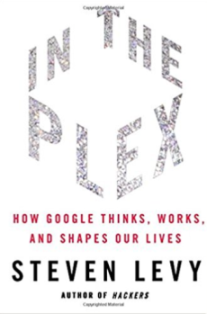

This list combines the recommendations from the following product heros:
85 Quora answers, Ken Norton, Noah Weiss, Julie Zhuo, Steve Jobs, Bill Gates, Ben Horowitz, Simon Cross, Alex Schultz, and Tomasz Tunguz.
Click on a recommender's name underneath the book title to go to their review.
65 BOOKS LISTED
filter by topic:
analytics & dataempathyleadershipmarketing & growthbusinessdesignbiographiesproduct managementcommunicationinterviewing
#2rank
#4rank
Get an email when new books are added to Product Book:
Alert me#6rank
#7rank
Quora mentions: 2
Recommendations: 6
Ben HorowitzJulie ZhuoKen NortonNoah WeissSimon CrossTomasz Tunguz
Recommendations: 6
Ben HorowitzJulie ZhuoKen NortonNoah WeissSimon CrossTomasz Tunguz
#9rank


#26rank
